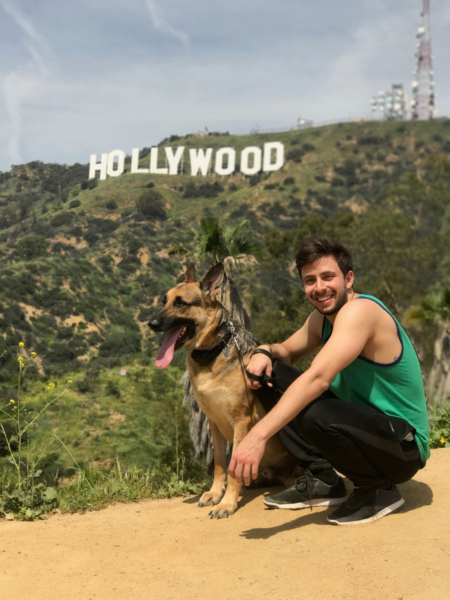

Hello!
I'm Bradley. I'm a Computer Science student at the University of Florida. Feel free to look around to learn more about me, my work experiences, and some of my personal projects!
About Me

Bradley Treuherz
I'm 22 years old currently studying Computer Science at the University of Florida. I'm the Vice President of the Software Engineering Club at UF where I work largely on developing tutorials to get other students excited about creating cool software! I'm really passionate about this field and spend a lot of my freetime trying to progress myself by creating projects. I always strive to take the courses here at UF that are going to challenge me and enable me to learn more. I also play guitar and piano and love listening to and creating music.
Personal Projects
Jackpot Lottery
Repo
This project was intended to create a fair platform for event registration (specifically when more people wish to attend than there is space). I worked with a small team to deliver fully functioning Android, iOS, and Web apps that allowed the user to create events, register for events, and random selection attendees. I personally build the iOS application and created and deployed the web server with node, express, and mongo.
HeadsUp
Repo
This project was sponsored by Google's 2016 IOT Research Award Pilot. Through the use of Google Proximity Beacons, a node server, web-client, and an Android applications, owners of a space are provided with the means to provide their patrons with contextually relevant information (ads, announcements, and the facilitation of social interactions).
Honey I'm Home!

Repo
Honey I'm Home was a hackathon project that I worked on during SwampHacks 2016. It is an internet of things application that allows members of a household to customize greetings, automate tasks, and secure their home via the use of facial recognition technology. This project included a node server and web-front end for user customization, as well as a pervasive device running a python script with facial detection algorithms.
This project won 2nd place overall as well as being awarded State Farm's favorite project.
Talk to me!

Link Repo
Talk to me is a web based chat application written with Meteor.js. The application allows users to join/create a chat room and talk to other users.
Bluetooth Car

Repo
I purchased a cheap RC car and stripped it down to just the chassis and two motors. With an Arduino Uno, bluetooth chip (HC-06), and a motor driver board, the car now receives instructions via bluetooth from an Android app I created.
Brickbreaker Clone
Repo
This game was one of the first projects I ever worked on. It is a brickbreaker clone written in Python using Pygame. After completing the game and running it as a desktop application, with a few small modifications and the use of the Pygame Subset for Android, I ported the game to run on Android.
Zone

Repo
This project is a game based off of Ramiro Corbetta's Hokra. It was written in C++ using SDL 2 by myself and a team of students from one of my courses. The objective of the game is to capture a ball and hold it in your team's zone for as long as possible. A meter fills up whenever the ball is in your zone and the first team to fill the meter wins.
Work Experience
Software Engineering Intern - Microsoft
Summer 2017
I developed a cross-platform mobile application for the Windows Dev Center. This application provides a tool for application developers to view analytics data (acquisitions, crashes, ratings and reviews, etc.) for their apps at any time. The application was developed using Xamarin and provides a rich UI with various charts, graphs, and other components to make for a pleasant user experience.
Software Engineering Intern - SpaceX
Spring 2017
Worked on a web application used to review photos taken during the manufacturing process. I Greatly reduced dead time by creating an entirely new workflow for the photo review process. I also designed and implemented a notification system to inform technicians when action is required. My work here too kme through all ends of the tech stack from creating a new data model (SQL), backend support (.NET MVC), and various new UI features and enhancements (Knockout and TypeScript). I deployed the application in 4 major phases using a CI pipeline and met with user groups at various stages of deployment for feedback.
Software Engineering Intern - Microsoft
Summer 2016
I worked on a team that provides high scale partitioned request-response services to the Universal Store and Xbox. My role was to design and implement a new service and library for blob storage and caching solutions.

Software Engineering Intern - Ultimate Software
Summer 2015
Developed a web application for managing product features.

Part-Time Engineer - SpinCore Technologies
Fall 2014
Hardware testing, sales, and customer support.